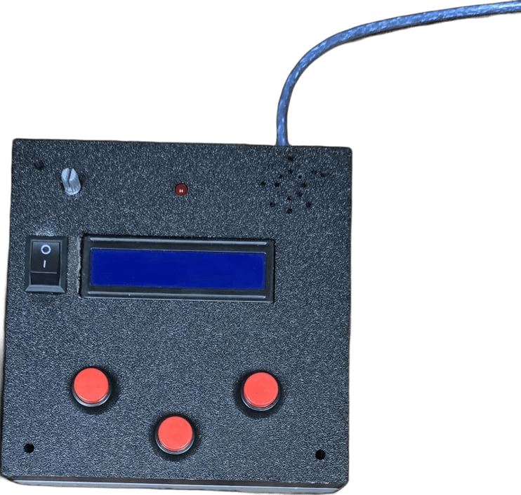

.png)
INSOVA
Neuro Glove - AI Rehabilitation System
Neuro Glove - AI Rehabilitation System
Parkinson’s and stroke affect millions worldwide.
Patients suffer from hand tremors and loss of independence.
Traditional rehabilitation devices are:
• Bulky and heavy
• Extremely expensive ($5,000–$50,000+)
• Limited to clinical use
• Not accessible for daily home therapy
80% of stroke patients need continuous rehabilitation but cannot afford it.
A lightweight wearable glove designed to assist patients in regaining hand control.
• Fully wireless
• Affordable
• Usable anytime, anywhere
• Designed for home therapy
1. EMG sensors detect muscle signals
2. AI processes signals in real-time
3. Vibration system assists movement
Modes:
• Automatic Mode
• Manual Mode
• Therapy Mode
• Lightweight (less than 200g)
• 8+ hours battery
• USB-C charging
• 80% cheaper than traditional devices
• Comfortable for long use
• Stroke patients
• Rehabilitation centers
• Elderly care
• Home healthcare users

Neuro Glove

Control Box
Smart Spoon
• Neuro Glove (main device)
• Control Box
• Smart Spoon for independent eating
• Reaction system for patient monitoring
Phase 1: Clinical trials & approvals
Phase 2: Manufacturing & scaling
Phase 3: Market launch & expansion
• Measure vital signs
• Predict diseases using AI
• Mobile app integration
• Sleep & stress monitoring
Ibrahim Khaled – Leader & Electronics
Abdelrahman Sayed – Software
Mohamed Reda – Electronics
Abanoub Alameer – PR
Mostafa Abd-Elqader – Designer
2nd Place – Banha Healthcare Hackathon 2026